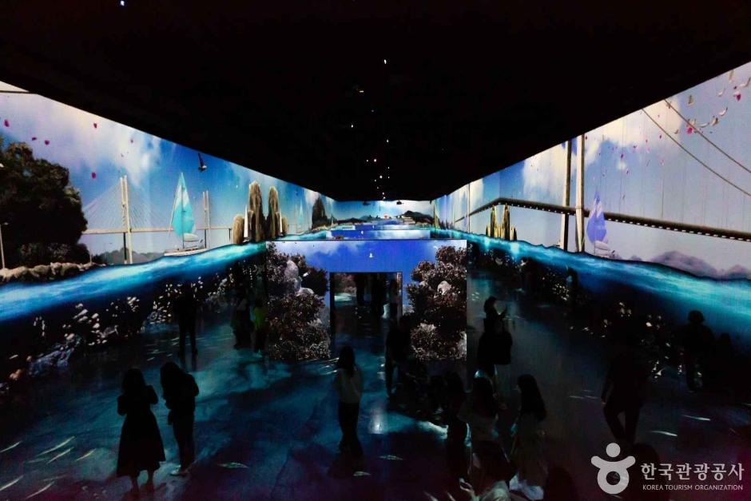
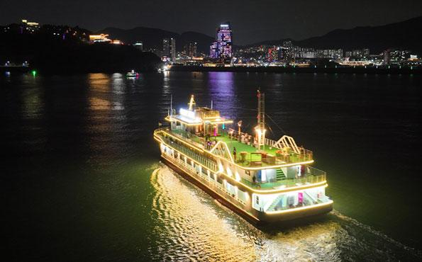

ESFP 추천 여행지
전라남도 여수


추천 이유
ESFP는 사람들과 어울리고 새로운 즐거움을 찾는 것을 좋아하는 성향입니다. 여수는 아름다운 바다 풍경과 다양한 액티비티, 맛집과 야경까지 모두 즐길 수 있어 활기찬 여행을 선호하는 ESFP에게 잘 어울리는 여행지입니다.
추천 여행 코스
- 유월드 루지테마파크
- 여수 해상 케이블카
- 여수 미남크루즈
- 하멜등대
- 여수당
- 여수 밤바다 감상
추천 포인트
- 바다와 도시가 어우러진 아름다운 풍경
- 루지, 크루즈 등 다양한 액티비티 체험
- 인생 사진을 남기기 좋은 포토 스팟
- 친구들과 즐거운 추억을 만들기 좋은 여행지